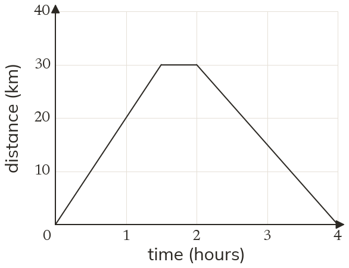
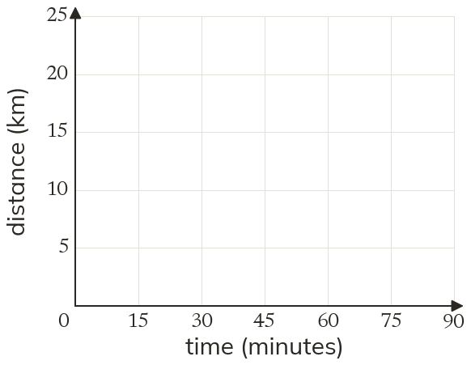
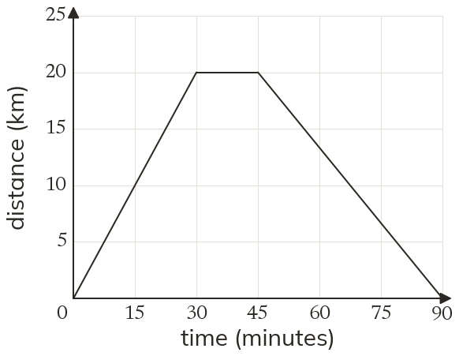

Westonbirt Maths · Speed-Time Graphs and Area
Distance-Time Graphs
Name: ______________________ Date: ____________
1
The graph shows Sam's bike ride. Describe each stage of the journey.
2
In which stage was Sam fastest? How can you tell from the graph?
3
A distance-time graph has a line from (2, 10) to (5, 10), in hours and km. What is happening?
4
A bus travels 20 km in 30 minutes, stops for 15 minutes, then returns to the start in 45 minutes. Draw its distance-time graph.
5
Walker A's line goes from (0, 0) to (2, 8), and walker B's from (0, 0) to (3, 15), in hours and km. Who is faster?
Ext
Use the graph in question 1. How far from home was Sam after 3 hours?


